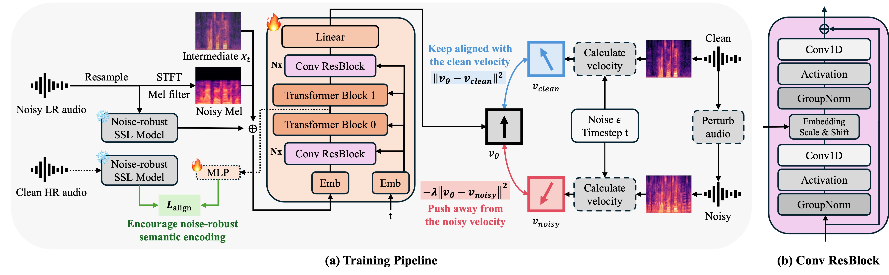

Noise-robust bandwidth expansion (NR-BWE) aims to reconstruct high-fidelity wideband speech from noisy low-resolution inputs. While flow matching has shown strong performance for speech generation, accurately recovering clean speech under noisy conditions remains challenging due to ambiguous velocity estimation. In this work, we propose VeRe-Flow, a clean-guided flow matching that introduces multi-level clean supervision to guide the generative process toward clean speech. At the velocity level, we introduce velocity contrastive regularization, which attracts the predicted velocity toward the clean trajectory while repelling it from noisy manifold. At the representation level, we incorporate a representation alignment objective that aligns intermediate features with clean self-supervised speech representations. Experimental results demonstrate that the proposed method achieves the lowest LSD, the highest DNSMOS OVRL and MOS among NR-BWE baselines. Audio samples are available.
This work has been submitted to Interspeech 2026 for review.

Figure 1. Overview of the proposed system
Comparison of 8k Noisy Input , NU-Wave2, FLowHigh, VeRe-Flow (Proposed), and 16k Clean Ground Truth.
* NU-Wave2 and FLowHigh are retrained under the same NR-BWE setting as the proposed method.
| Sample | 8k Noisy Input | NU-Wave2 | FLowHigh | VeRe-Flow (Proposed) | 16k Clean GT |
|---|---|---|---|---|---|
| Speaker p232 | |||||
| Sample 1 | |||||
| Sample 2 | |||||
| Sample 3 | |||||
| Sample 4 | |||||
| Sample 5 | |||||
| Sample 6 | |||||
| Sample 7 | |||||
| Sample 8 | |||||
| Sample 9 | |||||
| Sample 10 | |||||
| Speaker p257 | |||||
| Sample 1 | |||||
| Sample 2 | |||||
| Sample 3 | |||||
| Sample 4 | |||||
| Sample 5 | |||||
| Sample 6 | |||||
| Sample 7 | |||||
| Sample 8 | |||||
| Sample 9 | |||||
| Sample 10 | |||||
[1] C. Valentini-Botinhao et al., "Noisy speech database for training speech enhancement algorithms and TTS models," 2017.